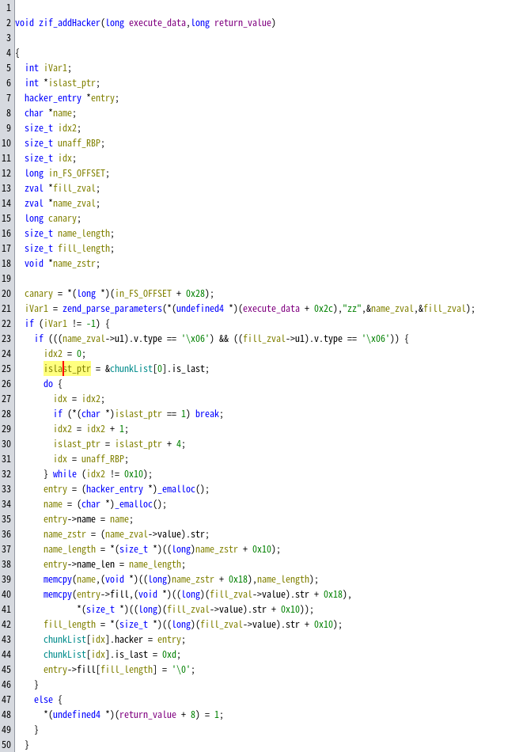

上一篇blog中，我们学习了一些PHP extension for C的基本内容，下面结合一道题来进行分析，同时学习一些题目中会涉及的新内容。
题目示例：2024 D^3CTF PwnShell 链接
A. 逆向分析
该题是一道典型的PHP pwn，题目中给出了一个简单的PHP文件上传脚本，我们可以上传PHP文件然后远程执行，调用有漏洞的C库，最后通过反弹shell进行RCE。
这里我们使用的逆向分析引擎为Ghidra。
A.1 基本数据获取
在上一篇blog中，我们提到，一个PHP扩展必然存在一个_zend_module_entry结构，用于保存该扩展的基本信息。我们可以在Ghidra中定义下面的结构，其中函数指针以void*代替。随后，可以在0x104080找到vuln_module_entry，从数据大小和变量名来看应该就是我们要找的_zend_module_entry。进行数据类型转换后如下所示。
1 | struct _zend_module_entry { |
由此可以获取一些基本信息，包括扩展的名字vuln、版本0.1.0等。
随后，我们定义_zend_function_entry结构，找到vuln_module_entry并设置其数据类型，如下图所示，可以看到，扩展一共定义了4个函数可供调用。
随后，定义表示参数类型的数据结构，得到这些函数的参数信息，如下图所示。
可以获取这些函数的原型：
1 | void zif_addHacker(undef name, undef fill); |
A.2 函数逆向
下面，我们分析一下库中定义的函数。
zif_addHacker
反汇编结果如下图所示。
在这里，C语言解析参数的方式与上一篇blog中描述的不同。这里是使用zend_parse_parameters进行解析。这种解析方式更加直观。
zend_parse_parameters可传入不固定数量的参数，一般用于一次性解析所有参数：
1 | int zend_parse_parameters(int num_args, char *type_spec, ...); |
第一个参数为参数数量，第二个参数为参数解析格式。根据PHP源代码文档，type_spec参数的格式如下：
1 | 对于一个参数，可以使用一个字符序列表示该参数的解析规则。在后面的变长参数中，需要顺序传入参数保存值的引用值。 |
具体的示例参见PHP文档，已保存到网站本地。
在定义了必要的数据结构之后，可以完成对该函数的反汇编，重定义数据类型与命名后，结果如下所示。

下面是推断出的本地定义的数据结构：
1 | struct hacker_entry { |
这里没有定义zend_string，偏移0x10表示字符串长度，0x18表示字符串指针。
需要注意的是，结构体hacker_entry的最后一个字段的数组长度未知，又因为没有对fill参数的长度进行判断，因此可能存在堆内存溢出漏洞。我们需要分析内存分配函数_emalloc以明确溢出的具体信息。
查阅PHP源代码发现，_emalloc是PHP自己实现的一个内存分配函数，即PHP默认不使用外部库（如glibc）进行内存分配。当然在C语言编写的扩展中使用glibc也是完全允许的。这部分代码分析在我们将4个扩展内函数逆向完成后再进行。
zif_removeHacker
zif_displayHacker
这个函数只返回了之前传入的Hacker名，而不会返回fill。
zif_editHacker
这里只是修改了Hacker的名字，没有改变fill。
由上面的分析可知，本题的漏洞点应该就在fill字段的处理上。我们需要理解PHP的内存分配系统原理，以尝试通过这个溢出实现get shell。
A.3 PHP 内存分配
_emalloc函数是PHP自定义的内存分配系统的分配入口点：
1 | // /Zend/zend_alloc.c, line 2534 |
这里有一个默认为真的宏定义，它将分配过程拆分为两个分支。首先来看默认分支，即_malloc_custom：
1 | // /Zend/zend_alloc.c, line 2414 |
由此可以找到PHP堆的全局定义结构如下：
1 | struct _zend_mm_heap { |
可以看到，自定义堆分配实际上就是自定义堆分配、释放与重新分配的函数。在全局结构构造函数alloc_globals_ctor (/Zend/zend_alloc.c, line 2798)中，实际上是将函数指针处初始化为__zend_malloc。__zend_malloc直接调用libc的malloc函数。因此自定义内存分配时默认使用libc库的内存分配函数。
下面再看到另一个分支。
1 | // /Zend/zend_alloc.c, line 1311 |
可以看到，这里根据分配需求的大小将调用不同的3个函数，其中ZEND_MM_MAX_SMALL_SIZE为3072，ZEND_MM_MAX_LARGE_SIZE为2MB-4KB。对于题目而言，要分配的大小基本都小于3072。需要注意的是，在函数调用中使用了ZEND_MM_SMALL_SIZE_TO_BIN宏定义，可以理解为：PHP内部使用30个链表保存以释放的小chunk，每个链表中保存一个大小范围内的chunk，这与musl libc有类似之处。
1 | // /Zend/zend_alloc.c, line 1157 |
这一段主要是将用户请求的大小转换为对应的freelist索引值。
1 | // /Zend/zend_alloc.c, line 324 |
从上面的定义可以获取30个freelist对应的chunk大小。可以看到，PHP在分配这部分内存时是以页为最小单位整个分配的，如对于大小为8的chunk，在初次分配时，应该是分配一整页4KB，随后将这一页拆分为512个8B大小的chunk来使用。
下面重点关注一下zend_mm_alloc_small。
1 | // /Zend/zend_alloc.c, line 1243 |
忽略宏定义中的内容，看下面的部分。首先会检查对应的freelist链表是否存在已经释放的chunk，如果有，则使用链表的第一个chunk作为返回值。否则会调用zend_mm_alloc_small_slow另外分配内存。
1 | // /Zend/zend_alloc.c, line 1187 |
在这个函数中，我们可以清晰地看到，zend_mm_alloc_pages之后，PHP构造了包含所有新分配的chunk的链表并放在freelist链表头部。即freelist链表不仅包含被释放的chunk，也有未被分配的chunk。最后返回其中的第一个chunk。
而对于chunk的释放，则非常简单，直接将该chunk放到对应freelist的头部即可。在分配与释放过程中，没有进行任何的安全检查，因此一旦出现堆相关漏洞，常常可以大做文章。
A.4 漏洞挖掘
从上面的分析来看，内存分配与释放均需要一个参数，但Ghidra没有识别出来，将参数添加后发现，先前发现的可能的溢出漏洞实际上并不存在，hacker_entry的最后一个字段实际上是一个不定长数组，在实际分配内存时会根据传入的字符串长度确定chunk大小。
那么，这道题的漏洞点又在何处？需要注意zif_displayHacker和zif_addHacker函数，在memcpy之后，有一个在字符串尾部添加\0的操作，这实际上是off by null。
由于freed chunk将链表指针放在chunk首部，chunk与chunk之间没有任何分隔，因此off by null有机会修改链表指针的值。将该指针的值修改为一个chunk A内部的地址，这样可以通过chunk A的重写完全覆盖chunk A后面的chunk B的链表指针。本题的so文件没有使用FULL RELRO安全保护，因此可以完成覆盖GOT表的操作，后面的内容就不用多说了。
B. 漏洞利用
明确漏洞后，接下来就是考虑如何利用该漏洞。本题中我们可以完成PHP文件上传，因此直接将exp PHP文件上传后通过网址执行即可。
不过在php.ini中，题目定义了很多禁用的函数，保存在disable_function中。在实际编写PHP脚本时，需要注意不要使用这里提到的函数。
在本题中，我们可以通过读取/proc/self/maps的方法获取PHP进程的libc基地址以及堆内存的基地址。但我们并不能直接通过fopen函数打开文件，这主要是防止我们直接去读取flag文件。不过，PHP功能强大，我们还是能够找到读取/proc/self/maps的方法。flag文件在普通权限下无法读取，但/proc/self/maps可以读取。
在zend_mm_alloc_small_slow中可以看到，初次分配的单向链表是低地址的chunk在头部，高地址的chunk在尾部。因此我们可以首先分配几个相同大小的chunk，随后按照从高到低的顺序释放。
需要注意的是，PHP不允许运行在其他版本下构建的C扩展，在API确认可用的情况下，可以通过修改module_entry中的zend_api与build_id中的版本信息使其在不同PHP版本下运行。
在解题过程中，通过gdb调试能够加快进度，此类PHP pwn的调试方法参考资料完成。下面演示一下调试流程。
B.1 PHP调试
在docker中安装gdbserver后，运行
1 | gdbserver :1234 php -S 0:8080 index.php |
使gdbserver监听本地1234端口，PHP监听本地8080端口。访问8080端口即相当于执行php index.php。随后多次使用n命令。遇到的第一个call指令调用后，将加载PHP运行过程中需要的所有动态链接库（不含C扩展），进入_start后会进入_libc_start_main，在一条call rax指令执行后进入监听状态，同时会显示加载C扩展情况，如下面两图所示。
在vuln.so中打下断点后，访问8080端口，即可让gdb断在想要的地方。
下面是PHP中的_emalloc函数：
这其中内联了zend_mm_alloc_small函数，一直跟进理解代码语义，我们能够找到堆的freelist结构：
可以看到，这里的freelist中低地址的chunk位于链表的前面。因此有下面的漏洞利用思路，即想办法构造一个地址最后1字节为’\x00’的fake pointer指向free.got，随后在同一个freelist中通过off by null将这个fake pointer链入这个freelist中。如下图所示。
这里解释一下使用0x70 chunk freelist的原因。在整个漏洞利用过程中，首先需要一个能够写入0x…00这种地址的chunk A，随后需要一个chunk B完成off by null，破坏后面的chunk C的指针。原先chunk C的指针指向chunk D，且chunk D地址除了最低字节外其他字节应该与chunk A写入的地址相同。在0x70 chunk freelist中，可以利用0x2a0、0x310、0x380、0x3f0这4个chunk，即0x2a0写入0x300为free.got，0x310完成off by null，将0x380处由0x3f0改为0x300，这样就可以完成指针伪造，并最终能够成功分配到首地址为0x300的chunk。
B.2 exp
1 |
|
成功利用，效果如下，这里仅显示在本地执行命令的结果。如果无法成功利用，可能是PHP环境问题，根据freelist状态调整冗余chunk的分配数量即可。